105 new exercises (37 new drawings outlined in green, the rest are copies of the closest existing drawing)
#1 Incline Chest Press (Machine) לחיצת חזה משופע במכונה
Chest · machine · copy of leverage-chest-press
Set the seat so the handles line up with your upper chest. Press forward and up until your arms are almost straight, then return slowly. Keep your back flat on the pad and shoulders down.
לכוון את המושב כך שהידיות יהיו בגובה החזה העליון. ללחוץ קדימה ולמעלה עד שהידיים כמעט ישרות, ואז לחזור לאט. לשמור על הגב צמוד לכרית ועל הכתפיים למטה.
#2 Incline Push-Up שכיבות סמיכה בשיפוע (ידיים על ספסל)
Chest · body only · copy of push-up

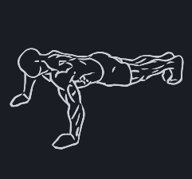
Put your hands on a bench a little wider than your shoulders and walk your feet back into a straight line. Lower your chest to the edge, then push away. Easier than a floor push-up and hits the lower chest.
להניח את הידיים על ספסל, מעט רחב מהכתפיים, וללכת אחורה עם הרגליים עד שהגוף בקו ישר. להוריד את החזה לקצה הספסל ואז לדחוף חזרה. קל יותר משכיבת סמיכה רגילה ועובד יותר על החזה התחתון.
#3 Decline Push-Up שכיבות סמיכה עם רגליים על ספסל
Chest · body only · copy of push-up
Put your feet on a bench and hands on the floor, a little wider than your shoulders. Keep your body straight and lower your chest toward the floor, then push back up. Hits the upper chest and shoulders.
להניח את הרגליים על ספסל ואת הידיים על הרצפה, מעט רחב מהכתפיים. לשמור על הגוף ישר, להוריד את החזה לכיוון הרצפה ולדחוף חזרה. עובד יותר על החזה העליון ועל הכתפיים.
#4 Dumbbell Floor Press לחיצת חזה על הרצפה עם משקולות
Chest · dumbbell · copy of dumbbell-bench-press
Lie on the floor with a dumbbell in each hand and your knees bent. Lower until your upper arms touch the floor, pause, then press up. The floor stops the stretch, so it is easy on the shoulders.
לשכב על הרצפה עם משקולת בכל יד והברכיים כפופות. להוריד עד שהזרועות העליונות נוגעות ברצפה, לעצור רגע ולדחוף למעלה. הרצפה עוצרת את התנועה בנקודה התחתונה, ולכן זה עדין לכתפיים.
#5 Wide-Grip Bench Press לחיצת חזה בגריפ רחב
Chest · barbell · copy of bench-press
Set up like a normal bench press but take the bar with your hands well outside shoulder width. Lower to your mid chest and press up. Keep your wrists stacked over your elbows.
להתארגן כמו בלחיצת חזה רגילה, אבל לאחוז במוט הרבה מחוץ לרוחב הכתפיים. להוריד לאמצע החזה ולדחוף למעלה. לשמור על שורשי כפות הידיים ישרים מעל המרפקים.
#6 Cable Chest Press לחיצת חזה בכבלים
Chest · cable · new drawing
Stand facing away from the stack with a handle in each hand at chest height and one foot forward. Press both hands straight out until your arms are almost straight, then return slowly. Brace your stomach so you do not lean.
לעמוד עם הגב למשקולות, ידית בכל יד בגובה החזה ורגל אחת קדימה. ללחוץ את שתי הידיים ישר קדימה עד שהן כמעט ישרות, ואז לחזור לאט. להדק את הבטן כדי לא להישען.
#7 Svend Press סוונד פרס (לחיצת פלטה)
Chest · other · new drawing · Hebrew name unsure
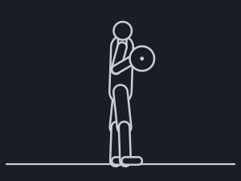
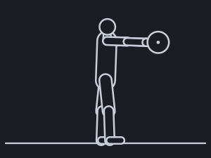
Squeeze a light plate between your palms at chest height. Push it straight out in front of you, then pull it back in while still squeezing hard. Use a light plate, it is a squeeze exercise.
ללחוץ פלטה קלה בין כפות הידיים בגובה החזה. לדחוף אותה ישר קדימה ואז להחזיר אליך תוך כדי לחיצה חזקה. להשתמש בפלטה קלה, זה תרגיל של לחיצה.
#8 Dumbbell Squeeze Press לחיצת חזה עם משקולות צמודות (הקס פרס)
Chest · dumbbell · copy of dumbbell-bench-press · Hebrew name unsure
Lie back and press two dumbbells together over your chest. Keep squeezing them into each other while you lower and press. This keeps the inner chest working the whole rep.
לשכב על הגב וללחוץ שתי משקולות זו לזו מעל החזה. להמשיך ללחוץ אותן זו אל זו בזמן ההורדה והדחיפה. כך החזה הפנימי עובד לאורך כל החזרה.
#9 Wide Push-Up שכיבות סמיכה רחבות
Chest · body only · copy of push-up
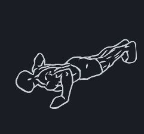

Place your hands clearly wider than your shoulders and keep your body straight. Lower your chest between your hands, then push up. Hits the outer chest more than a normal push-up.
להניח את הידיים בבירור רחב מהכתפיים ולשמור על הגוף ישר. להוריד את החזה בין הידיים ואז לדחוף למעלה. עובד יותר על החזה החיצוני משכיבת סמיכה רגילה.
#10 TRX Push-Up שכיבות סמיכה ב-TRX
Chest · other · new drawing
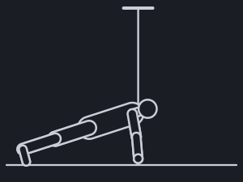
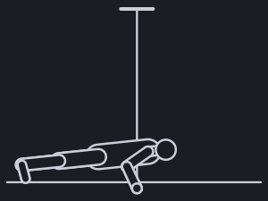
Hold the handles at chest height and lean forward on your toes in a straight line. Lower your chest between your hands, then push up while keeping the straps steady. The unstable handles make your core and shoulders work harder.
לאחוז בידיות בגובה החזה ולהישען קדימה על אצבעות הרגליים בקו ישר. להוריד את החזה בין הידיים ואז לדחוף למעלה, תוך שמירה על הרצועות יציבות. הידיות הלא יציבות מעבידות יותר את הליבה והכתפיים.
#11 Single-Arm Cable Crossover קרוסאובר בכבל ביד אחת
Chest · cable · copy of mid-cable-crossover
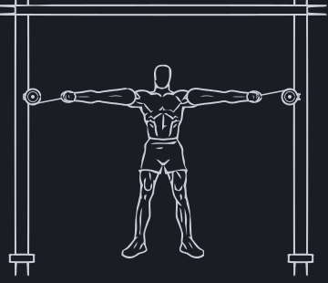
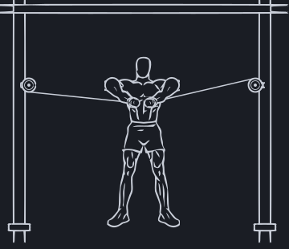
Set a handle at shoulder height or higher and stand sideways. Sweep your arm across your body in an arc, squeeze, and return slowly. Keep a small bend in your elbow throughout.
להגדיר ידית בגובה הכתף או מעליו ולעמוד בצד. להעביר את היד לרוחב הגוף בקשת, ללחוץ בסוף ולחזור לאט. לשמור על כיפוף קל במרפק לאורך כל התנועה.
#12 Low-Incline Dumbbell Press לחיצת חזה משופע נמוך עם משקולות
Chest · dumbbell · copy of incline-dumbbell-press
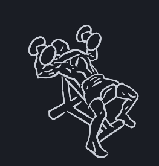
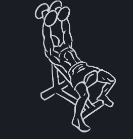
Set the bench to a very small slope. Press the dumbbells from your upper chest to straight arms, then lower slowly. Favors the upper chest with less shoulder than a steep incline.
להגדיר את הספסל בשיפוע קטן מאוד. ללחוץ את המשקולות מהחזה העליון עד שהידיים ישרות ואז להוריד לאט. מדגיש את החזה העליון עם פחות עומס על הכתף משיפוע גבוה.
#18 Seated Row (Machine) חתירה במכונה בישיבה
Back · machine · copy of leverage-high-row
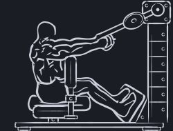

Sit with your chest on the pad and grab the handles. Pull your elbows back and squeeze your shoulder blades, then return slowly. Do not lean back to move the weight.
לשבת עם החזה על הכרית ולאחוז בידיות. למשוך את המרפקים אחורה ולהדק את השכמות, ואז לחזור לאט. לא להישען אחורה כדי להזיז את המשקל.
#19 Chest-Supported Dumbbell Row חתירה עם משקולות על ספסל משופע
Back · dumbbell · new drawing
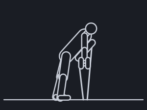
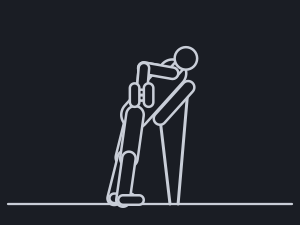
Lie face down on an incline bench with a dumbbell in each hand. Row the weights up toward your hips, squeeze, and lower under control. The bench removes lower-back swing.
לשכב עם הבטן על ספסל משופע ומשקולת בכל יד. למשוך את המשקולות כלפי הירכיים, להדק ולהוריד בשליטה. הספסל מונע נדנוד של הגב התחתון.
#20 Assisted Pull-Up (Machine) מתח בעזרת מכונה (גרביטרון)
Back · machine · new drawing
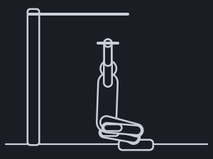
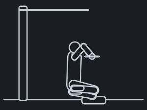
Kneel or stand on the pad and set a counterweight, more weight makes it easier. Grab the handles and pull your chest up, then lower under control. Lower the assistance as you get stronger.
לכרוע או לעמוד על הכרית ולקבוע משקל נגד, ככל שהמשקל גבוה יותר זה קל יותר. לאחוז בידיות ולמשוך את החזה למעלה, ואז להוריד בשליטה. להקטין את העזרה ככל שמתחזקים.
#21 Trap Bar Deadlift דדליפט במוט משושה (טראפ בר)
Back · barbell · copy of barbell-deadlift
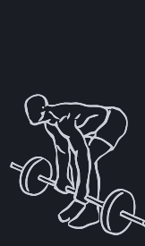
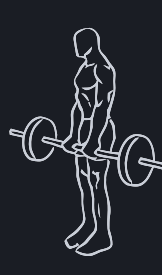
Stand inside the trap bar with feet hip-width and grip the handles. Brace your stomach, push the floor away and stand up tall. Lower the bar under control to the floor.
לעמוד בתוך המוט המשושה כשהרגליים ברוחב הירכיים ולאחוז בידיות. להדק את הבטן, לדחוף את הרצפה ולהזדקף. להוריד את המוט בשליטה אל הרצפה.
#22 Sumo Deadlift דדליפט סומו
Back · barbell · copy of barbell-deadlift
Take a wide stance with toes turned out and grip the bar inside your knees. Push your knees out, keep your chest up and stand tall. Lower the bar back along your legs.
לעמוד ברגליים פשוקות עם אצבעות לכיוון החוץ ולאחוז במוט בתוך הברכיים. לדחוף את הברכיים החוצה, לשמור על החזה למעלה ולהזדקף. להוריד את המוט חזרה לאורך הרגליים.
#23 Pendlay Row חתירה פנדליי
Back · barbell · copy of bent-over-barbell-row
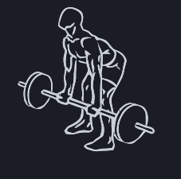
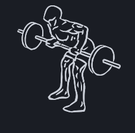
Bend over with your back flat and torso close to parallel to the floor. Row the bar to your lower chest from a dead stop on the floor each rep, then lower it back down. Keep your hips still.
להתכופף עם גב ישר וגו כמעט מקביל לרצפה. למשוך את המוט לחזה התחתון מעצירה מלאה על הרצפה בכל חזרה, ואז להחזיר אותו למטה. לשמור על הירכיים במקום.
#25 Wide-Grip Pull-Up מתח בגריפ רחב
Back · body only · copy of pull-up
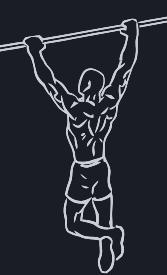
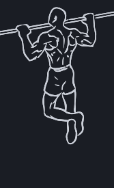
Take the bar clearly wider than shoulder width. Pull your chest toward the bar, then lower to a full hang. Think of driving your elbows down.
לאחוז במוט בבירור רחב מהכתפיים. למשוך את החזה לכיוון המוט ואז להוריד לתלייה מלאה. לחשוב על הורדת המרפקים כלפי מטה.
#26 Single-Arm Lat Pulldown פולדאון ביד אחת
Back · cable · copy of wide-grip-lat-pulldown
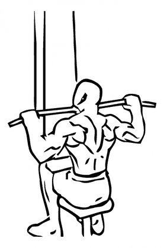
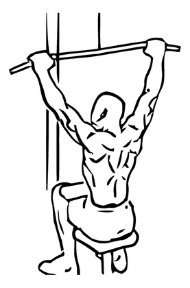
Sit at the pulldown with one handle and pull your elbow down and in toward your hip. Feel the lat squeeze, then let the arm rise slowly to a full stretch. Do not twist your body.
לשבת מול מכונת המשיכה עם ידית אחת ולמשוך את המרפק מטה ופנימה לכיוון הירך. להרגיש את הלחיצה בגב הרחב ולתת ליד לעלות לאט לכל המתיחה. לא לסובב את הגוף.
#27 Single-Arm Cable Row חתירה בכבל ביד אחת
Back · cable · copy of seated-cable-row
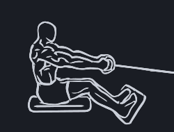
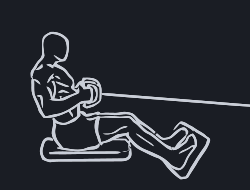
Hold one handle and pull your elbow back past your ribs while keeping your torso still. Squeeze your lat, then reach forward again. Do not rotate your shoulders.
לאחוז בידית אחת ולמשוך את המרפק אחורה מעבר לצלעות תוך שמירה על הגו יציב. להדק את הגב הרחב ואז להושיט קדימה שוב. לא לסובב את הכתפיים.
#28 Rack Pull ראק פול
Back · barbell · copy of barbell-deadlift
Set the bar on the rack at knee height. Grip it, tighten your back and stand up, pushing your hips forward. Lower the bar back down to the pins. A top-half deadlift for the upper back.
להניח את המוט על המתקן בגובה הברכיים. לאחוז בו, להדק את הגב ולהזדקף תוך דחיפת הירכיים קדימה. להוריד את המוט חזרה אל הסיכות. דדליפט של החצי העליון, לגב העליון.
#29 Landmine Row חתירת לנדמיין
Back · barbell · copy of t-bar-row
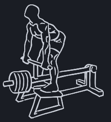
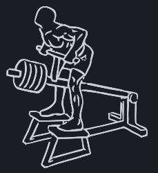
Straddle the bar and hinge forward with a flat back. Pull the handle to your chest, squeeze, then lower slowly. Keep your hips still.
לעמוד מעל המוט עם רגליים משני צדדיו ולהתכופף קדימה עם גב ישר. למשוך את הידית לחזה, להדק ולהוריד לאט. לשמור על הירכיים במקום.
#30 Iso-Lateral Row (Machine) חתירה במכונת האמר (ידיים נפרדות)
Back · machine · copy of leverage-high-row

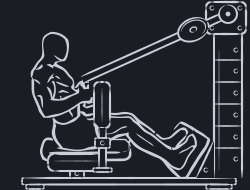
Sit with your chest on the pad and grab the handles. Pull each arm back by driving the elbows behind you, then return with a full stretch. Arms work separately so a weaker side cannot hide.
לשבת עם החזה על הכרית ולאחוז בידיות. למשוך כל יד אחורה בדחיפת המרפק מאחורי הגוף, ואז לחזור במתיחה מלאה. הידיים עובדות בנפרד, כך שצד חלש לא יכול להסתתר.
#31 Reverse Hyperextension היפראקסטנשן הפוך
Back · machine · new drawing
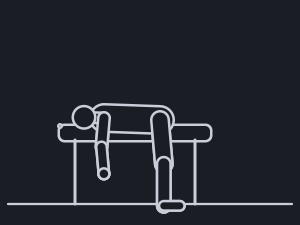
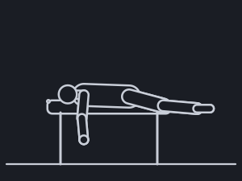
Lie face down with your hips at the edge and legs hanging. Squeeze your glutes and swing your legs up until in line with your body, then lower slowly. Do not swing with momentum.
לשכב עם הבטן על המכונה, הירכיים בקצה והרגליים תלויות. להדק את הישבן ולהניף את הרגליים למעלה עד שהן בקו אחד עם הגוף, ואז להוריד לאט. לא להשתמש בתנופה.
#32 Weighted Pull-Up מתח עם משקל
Back · body only · copy of pull-up
Attach weight with a belt or vest and hang with a grip just wider than shoulders. Pull your chest to the bar and lower fully. Add weight gradually.
לחבר משקל בחגורה או באפוד ולהיתלות בגריפ מעט רחב מהכתפיים. למשוך את החזה למוט ולהוריד עד הסוף. להוסיף משקל בהדרגה.
#33 TRX Row חתירה ב-TRX
Back · other · copy of inverted-row
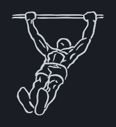
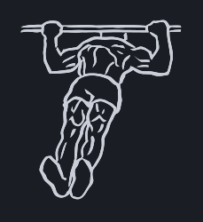
Hold the handles and lean back with your body straight. Pull your chest to your hands, squeeze your shoulder blades, then lower slowly. Walk your feet forward to make it harder.
לאחוז בידיות ולהישען אחורה כשהגוף ישר. למשוך את החזה לכיוון הידיים, להדק את השכמות ולהוריד לאט. ללכת עם הרגליים קדימה כדי להקשות.
#35 Cable Shrug שרג בכבל
Back · cable · copy of dumbbell-shrug
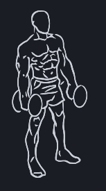
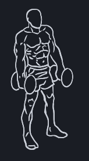
Hold a bar or handles on a low pulley with your arms straight. Shrug your shoulders straight up toward your ears, hold, and lower slowly. Do not roll your shoulders.
לאחוז במוט או בידיות בכבל תחתון כשהידיים ישרות. למשוך את הכתפיים ישר למעלה לכיוון האוזניים, להחזיק ולהוריד לאט. לא לעשות סיבובי כתפיים.
#36 Smith Machine Shrug שרג בסמית' מכונה
Back · machine · copy of barbell-shrug
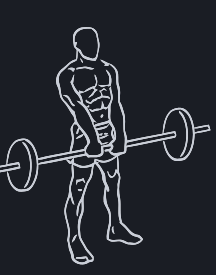
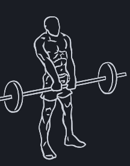
Hold the Smith bar in front of your thighs with straight arms. Shrug straight up, pause, and lower slowly. Do not roll your shoulders or bend your elbows.
לאחוז במוט הסמית' מול הירכיים כשהידיים ישרות. למשוך ישר למעלה, לעצור ולהוריד לאט. לא לסובב את הכתפיים ולא לכופף את המרפקים.
#37 Lat Pulldown (Machine) פולדאון במכונת פלטות
Back · machine · copy of wide-grip-lat-pulldown
Sit under the handles and grab them. Pull your elbows down toward your sides while keeping your chest tall. Return slowly to a full stretch.
לשבת מתחת לידיות ולאחוז בהן. למשוך את המרפקים מטה לכיוון הצדדים תוך שמירה על החזה זקוף. לחזור לאט למתיחה מלאה.
#39 Single-Arm Cable Lateral Raise הרמה צידית בכבל ביד אחת
Shoulders · cable · copy of cable-seated-lateral-raise
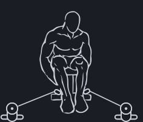
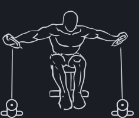
Stand sideways to the pulley and hold the handle with the far hand. Raise your arm out to the side to shoulder height, then lower slowly. The cable keeps tension at the bottom.
לעמוד בצד לכבל ולאחוז בידית ביד הרחוקה. להרים את היד לצד עד גובה הכתף ואז להוריד לאט. הכבל שומר על מתח גם בתחתית התנועה.
#40 Push Press פוש פרס
Shoulders · barbell · copy of overhead-press
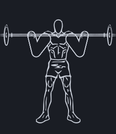
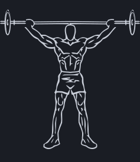
Hold the bar at your shoulders, dip slightly by bending your knees, then drive up with your legs and press the bar overhead. Lower it back to your shoulders. Your legs start the lift, your shoulders finish it.
להחזיק את המוט על הכתפיים, לרדת מעט בכיפוף ברכיים ואז לדחוף למעלה עם הרגליים וללחוץ את המוט מעל הראש. להוריד אותו חזרה לכתפיים. הרגליים מתחילות את התנועה והכתפיים מסיימות אותה.
#41 Landmine Press לחיצת כתף בלנדמיין
Shoulders · barbell · new drawing
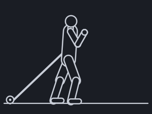
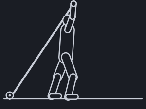
Hold the end of the bar at your shoulder and press it up and forward along its arc. Lower it slowly. Keep your ribs down and do not lean back.
להחזיק את קצה המוט ליד הכתף וללחוץ אותו למעלה וקדימה לאורך הקשת שלו. להוריד לאט. לשמור על הצלעות למטה ולא להישען אחורה.
#42 Smith Machine Shoulder Press לחיצת כתפיים בסמית' מכונה
Shoulders · machine · copy of machine-shoulder-military-press
Sit under the bar with the bench upright and lower it to chin level. Press it straight up until your arms are almost straight. Control it on the way down.
לשבת מתחת למוט כשהספסל זקוף ולהוריד אותו עד גובה הסנטר. ללחוץ ישר למעלה עד שהידיים כמעט ישרות. להוריד בשליטה.
#43 Kettlebell Overhead Press לחיצת כתף עם קטלבל
Shoulders · kettlebells · copy of one-arm-dumbbell-shoulder-press
Hold the kettlebell at your shoulder with your wrist straight. Press it overhead and finish with your bicep by your ear. Lower it back to your shoulder.
להחזיק את הקטלבל ליד הכתף כשפרק היד ישר. ללחוץ אותו מעל הראש ולסיים כשהזרוע ליד האוזן. להוריד חזרה לכתף.
#44 Pike Push-Up שכיבות סמיכה פייק (כתפיים)
Shoulders · body only · new drawing
Start in a push-up position then walk your feet in so your hips point to the ceiling. Bend your elbows to lower your head toward the floor, then push back up. A bodyweight shoulder press.
להתחיל במצב שכיבת סמיכה ואז ללכת עם הרגליים פנימה כך שהישבן מצביע לתקרה. לכופף את המרפקים ולהוריד את הראש לכיוון הרצפה, ואז לדחוף חזרה. לחיצת כתפיים עם משקל הגוף.
#45 Lateral Raise (Machine) הרמה צידית במכונה
Shoulders · machine · new drawing
Sit with your arms against the pads. Lift your arms out to the sides until about shoulder height, then lower slowly. Do not shrug.
לשבת כשהזרועות צמודות לכריות. להרים את הזרועות לצדדים עד בערך גובה הכתף ואז להוריד לאט. לא להרים את הכתפיים.
#46 Band Pull-Apart פתיחת גומיה (באנד פול אפארט)
Shoulders · bands · new drawing
Hold a band in front of you at shoulder height with straight arms. Pull your hands apart until the band touches your chest, then return slowly. Squeeze your shoulder blades together.
להחזיק גומייה מול הגוף בגובה הכתפיים כשהידיים ישרות. למשוך את הידיים לצדדים עד שהגומייה נוגעת בחזה, ואז לחזור לאט. לחבר את השכמות זו לזו.
#47 Plate Front Raise הרמה קדמית עם פלטה
Shoulders · other · new drawing
Hold a plate with both hands at the bottom of your thighs. Raise it to eye level with straight arms, then lower slowly. Do not lean back.
להחזיק פלטה בשתי ידיים בתחתית הירכיים. להרים אותה עד גובה העיניים כשהידיים ישרות ואז להוריד לאט. לא להישען אחורה.
#48 Rear Delt Row חתירה לכתף אחורית
Shoulders · dumbbell · copy of rear-delt-fly
Hinge forward with dumbbells hanging. Row them up with elbows wide out to the sides, so your arms go level with your shoulders. Squeeze the back of the shoulders.
להתכופף קדימה כשהמשקולות תלויות. למשוך אותן למעלה כשהמרפקים רחבים לצדדים, עד שהזרועות בגובה הכתפיים. להדק את החלק האחורי של הכתפיים.
#51 Barbell Front Raise הרמה קדמית עם מוט
Shoulders · barbell · copy of front-dumbbell-raise
Hold a barbell at your thighs with an overhand grip. Raise it to shoulder height with straight arms, then lower with control. Keep your back tall.
להחזיק מוט ליד הירכיים בגריפ עליון. להרים אותו עד גובה הכתף כשהידיים ישרות ואז להוריד בשליטה. לשמור על הגב זקוף.
#56 Seated Dumbbell Curl קרל משקולות בישיבה
Biceps · dumbbell · copy of dumbbell-bicep-curl
Sit on an upright bench with a dumbbell in each hand. Curl them up one or both together and lower slowly. Seated means no body swing.
לשבת על ספסל זקוף עם משקולת בכל יד. לכופף את המשקולות למעלה, יד אחת או שתיהן יחד, ולהוריד לאט. בישיבה אין נדנוד של הגוף.
#57 Bayesian Cable Curl קרל בייזיאן בכבל
Biceps · cable · new drawing
Stand facing away from the low pulley with the handle behind you in one hand. Curl up keeping your elbow behind your torso, then lower slowly. The arm starts stretched which hits the biceps hard.
לעמוד עם הגב לכבל התחתון כשהידית מאחוריך ביד אחת. לכופף למעלה כשהמרפק נשאר מאחורי הגו, ואז להוריד לאט. היד מתחילה במתיחה, וזה מעביד חזק את הדו ראשי.
#58 Single-Arm Cable Curl קרל בכבל ביד אחת
Biceps · cable · copy of cable-curl
Hold a handle on a low pulley, elbow close to your side. Curl up, squeeze, and lower slowly. Do not swing.
להחזיק ידית בכבל תחתון כשהמרפק צמוד לצד. לכופף למעלה, להדק ולהוריד לאט. לא לנדנד.
#59 Incline Hammer Curl האמר קרל על ספסל משופע
Biceps · dumbbell · copy of incline-dumbbell-curl
Lie back on an incline bench with arms hanging, palms facing in. Curl both dumbbells up with thumbs on top, then lower fully. The stretch hits the long head.
לשכב לאחור על ספסל משופע כשהידיים תלויות וכפות הידיים פונות פנימה. לכופף את שתי המשקולות למעלה כשהאגודלים למעלה, ולהוריד עד הסוף. המתיחה מעבידה את הראש הארוך.
#60 Overhead Cable Curl קרל בכבלים עליונים
Biceps · cable · new drawing
Stand between two high pulleys holding handles with arms out to the sides. Curl the handles toward your head like a double biceps pose, then extend slowly.
לעמוד בין שני כבלים עליונים ולהחזיק ידיות כשהידיים פרושות לצדדים. לכופף את הידיות לכיוון הראש כמו בתנוחת דו ראשי כפולה, ואז לפשוט לאט.
#70 Single-Arm Triceps Pushdown פושדאון ביד אחת
Triceps · cable · copy of triceps-pushdown
Hold a single handle on a high pulley with your elbow at your side. Press down to straight arm, then return slowly. Do not lean on the weight.
להחזיק ידית אחת בכבל עליון כשהמרפק צמוד לצד. ללחוץ למטה עד יד ישרה ואז לחזור לאט. לא להישען על המשקל.
#71 Single-Arm Overhead Cable Extension הרחבת יד אחורית מעל הראש בכבל ביד אחת
Triceps · cable · copy of cable-rope-overhead-triceps-extension
Face away from a low pulley, hold the handle overhead with your elbow pointing up. Extend your arm up to straight, then lower slowly. Keep the elbow in place.
לעמוד עם הגב לכבל תחתון ולהחזיק את הידית מעל הראש כשהמרפק מצביע למעלה. לפשוט את היד למעלה עד שהיא ישרה ואז להוריד לאט. לשמור על המרפק במקום.
#72 Weighted Triceps Dip מקבילים עם משקל
Triceps · body only · copy of triceps-dip
Hang weight from a belt and do dips on parallel bars. Stay upright to focus on the triceps. Lower until your elbows are at 90 degrees.
לתלות משקל בחגורה ולעשות מקבילים. להישאר זקופים כדי להתמקד בתלת ראשי. להוריד עד שהמרפקים בזווית של 90 מעלות.
#73 Cable Triceps Kickback קיקבק לטריצפס בכבל
Triceps · cable · copy of tricep-dumbbell-kickback
Hinge forward holding a handle at your side. Straighten your arm back, squeeze, and return slowly. Keep your upper arm fixed.
להתכופף קדימה ולהחזיק ידית ליד הגוף. לישר את היד אחורה, להדק ולחזור לאט. לשמור על הזרוע העליונה קבועה.
#83 Reverse Barbell Curl קרל הפוך עם מוט
Forearms · barbell · copy of barbell-curl
Hold the bar with palms facing down, shoulder width. Curl it up keeping your wrists straight, then lower slowly. Hits the top of the forearms.
להחזיק את המוט כשכפות הידיים פונות למטה, ברוחב הכתפיים. לכופף למעלה תוך שמירה על פרקי הידיים ישרים, ולהוריד לאט. עובד על החלק העליון של האמות.
#84 Farmer's Walk הליכת איכר
Forearms · dumbbell · new drawing
Pick up a heavy weight in each hand and stand tall. Walk with short quick steps without leaning. Great for grip and traps.
להרים משקל כבד בכל יד ולעמוד זקוף. ללכת בצעדים קצרים ומהירים בלי להישען. מצוין לאחיזה ולטרפזים.
#85 Dead Hang תלייה על מתח
Forearms · body only · timed · copy of pull-up
Hang from a bar with an overhand grip and arms straight. Keep your shoulders active and breathe. Hold as long as you can, a grip and shoulder health builder.
להיתלות על מוט בגריפ עליון והידיים ישרות. לשמור על הכתפיים פעילות ולנשום. להחזיק כמה שאפשר, בונה אחיזה ובריאות כתפיים.
#86 Reverse EZ-Bar Curl קרל הפוך עם מוט W
Forearms · e-z curl bar · copy of ez-bar-curl
Hold the EZ bar overhand on the angled parts. Curl up with your elbows at your sides, then lower slowly. Easier on the wrists than a straight bar.
להחזיק את מוט ה-W מלמעלה בחלקים המזוויתים. לכופף למעלה כשהמרפקים צמודים לצדדים ולהוריד לאט. עדין יותר לפרקי הידיים ממוט ישר.
#87 Reverse Cable Curl קרל הפוך בכבל
Forearms · cable · copy of cable-curl
Hold a straight bar or EZ attachment on a low pulley, palms down. Curl up and lower slowly. Cable keeps tension at the bottom.
להחזיק מוט ישר או מוט W בכבל תחתון, כפות הידיים למטה. לכופף למעלה ולהוריד לאט. הכבל שומר על מתח בתחתית התנועה.
#88 Suitcase Carry הליכה עם משקולת ביד אחת
Forearms · dumbbell · new drawing
Hold a heavy weight on one side and walk tall without leaning. Do not let the weight pull you sideways. Switch sides.
להחזיק משקל כבד בצד אחד וללכת זקוף בלי להישען. לא לתת למשקל למשוך אתכם הצידה. להחליף צד.
#96 Side Plank פלאנק צדי
Abs · body only · timed · new drawing
Lie on your side with your forearm under your shoulder. Lift your hips so your body forms a straight line, hold, and breathe. Switch sides.
לשכב על הצד כשהאמה מתחת לכתף. להרים את הירכיים כך שהגוף יוצר קו ישר, להחזיק ולנשום. להחליף צד.
#97 Hanging Knee Raise הרמת ברכיים בתלייה
Abs · body only · copy of hanging-leg-raise
Hang from a bar and pull your knees up toward your chest, curling your hips. Lower slowly without swinging.
להיתלות על מוט ולמשוך את הברכיים לחזה תוך גלגול האגן. להוריד לאט בלי להתנדנד.
#98 Captain's Chair Leg Raise הרמת רגליים בכיסא קפטן
Abs · other · copy of hanging-leg-raise
Support yourself on the pads with your back against the backrest. Raise your knees or straight legs up and lower slowly.
להישען על הכריות כשהגב צמוד למשענת. להרים את הברכיים או את הרגליים הישרות למעלה ולהוריד לאט.
#99 Hollow Body Hold החזקת חלולה (הולו)
Abs · body only · timed · new drawing
Lie on your back and press your lower back into the floor. Lift your shoulders and legs a few inches and hold the banana shape.
לשכב על הגב וללחוץ את הגב התחתון לרצפה. להרים את הכתפיים והרגליים כמה סנטימטרים ולהחזיק את צורת הבננה.
#100 L-Sit אל סיט (ישיבת L)
Abs · body only · timed · new drawing
Support yourself on straight arms with your legs straight out in front, parallel to the floor. Press down and hold. Bend your knees to make it easier.
להישען על ידיים ישרות כשהרגליים ישרות קדימה, במקביל לרצפה. ללחוץ למטה ולהחזיק. לכופף ברכיים כדי להקל.
#101 Dead Bug דד באג
Abs · body only · new drawing
Lie on your back with arms up and knees bent at 90 degrees. Lower the opposite arm and leg while your lower back stays flat, then switch. Move slowly.
לשכב על הגב כשהידיים למעלה והברכיים כפופות ב-90 מעלות. להוריד יד ורגל מנוגדות כשהגב התחתון נשאר צמוד לרצפה, ואז להחליף. לנוע לאט.
#102 V-Up וי-אפ
Abs · body only · copy of sit-up
Lie flat with arms overhead. Lift your legs and torso at the same time to touch your toes in a V shape, then lower.
לשכב ישר כשהידיים מעל הראש. להרים בו זמנית את הרגליים ואת פלג הגוף העליון כדי לגעת בבהונות בצורת V, ואז להוריד.
#103 Decline Sit-Up סיט אפ בספסל משופע
Abs · body only · copy of sit-up
Hook your feet under the pads on a decline bench. Curl up to sit, then lower slowly.
לנעול את כפות הרגליים מתחת לכריות בספסל משופע. להתרומם לישיבה ואז להוריד לאט.
#104 Cable Woodchop חטיבת עצים בכבל (וודצ'ופ)
Abs · cable · new drawing
Stand sideways to a high pulley, hold the handle with both hands. Pull diagonally down across your body, rotating your torso. Return slowly.
לעמוד בצד לכבל עליון ולאחוז בידית בשתי ידיים. למשוך באלכסון מטה לרוחב הגוף תוך סיבוב פלג הגוף העליון. לחזור לאט.
#105 Mountain Climber מטפס הרים
Abs · body only · new drawing
Start in a high plank. Drive one knee to your chest then switch quickly, like running in place. Keep hips low.
להתחיל בפלאנק גבוה. להעלות ברך אחת לחזה ולהחליף במהירות, כמו ריצה במקום. לשמור על הירכיים נמוכות.
#106 Bird Dog ציפור-כלב (בירד דוג)
Abs · body only · new drawing
On hands and knees, reach one arm forward and the opposite leg back. Hold briefly, return and switch. Keep your back flat.
לעמוד על ארבע ולהושיט יד אחת קדימה ורגל מנוגדת אחורה. להחזיק רגע, לחזור ולהחליף. לשמור על הגב ישר.
#107 Flutter Kicks בעיטות פרפר
Abs · body only · copy of lying-leg-raise
Lie on your back and lift your legs a few inches. Kick them up and down in small alternating motions with your lower back pressed down.
לשכב על הגב ולהרים את הרגליים כמה סנטימטרים. לבעוט למעלה ולמטה בתנועות קטנות לסירוגין כשהגב התחתון לחוץ לרצפה.
#108 Stability Ball Crunch כפיפות בטן על כדור
Abs · other · copy of bosu-ball-crunch
Lie back on a ball with your lower back supported. Curl your upper body up, then lower. The ball gives a longer stretch.
לשכב לאחור על כדור כשהגב התחתון נתמך. לגלגל את פלג הגוף העליון למעלה ואז להוריד. הכדור נותן מתיחה ארוכה יותר.
#110 Toes to Bar רגליים למוט (טוז טו בר)
Abs · body only · copy of hanging-leg-raise
Hang from a bar and lift your straight legs until your toes touch the bar. Lower with control. Advanced, build up with knee raises.
להיתלות על מוט ולהרים רגליים ישרות עד שהבהונות נוגעות במוט. להוריד בשליטה. תרגיל מתקדם, כדאי להתקדם אליו דרך הרמות ברכיים.
#118 Bulgarian Split Squat בולגרית (סקוואט בולגרי)
Quads · dumbbell · copy of split-squat-with-dumbbells
Put your rear foot on a bench, front foot far enough forward. Lower your back knee toward the floor, then drive up through your front foot. Hold dumbbells for extra load.
להניח את כף הרגל האחורית על ספסל ולהרחיק את הרגל הקדמית מספיק קדימה. להוריד את הברך האחורית לכיוון הרצפה ואז לדחוף למעלה דרך הרגל הקדמית. להחזיק משקולות לעומס נוסף.
#119 Wall Sit סקוואט סטטי
Quads · body only · timed · new drawing
Slide down a wall until your thighs are parallel to the floor. Keep your back flat and hold. Knees stay over ankles.
להחליק במורד קיר עד שהירכיים מקבילות לרצפה. לשמור על הגב ישר ולהחזיק. הברכיים נשארות מעל הקרסוליים.
#120 Bodyweight Squat סקוואט משקל גוף
Quads · body only · copy of dumbbell-squat
Stand with feet shoulder width. Sit back and down until your thighs are parallel, then stand. Arms forward for balance.
לעמוד ברגליים ברוחב הכתפיים. לשבת אחורה ולמטה עד שהירכיים מקבילות ואז לעמוד. הידיים קדימה לשיווי משקל.
#121 Dumbbell Reverse Lunge לאנג' אחורי עם משקולות
Quads · dumbbell · copy of dumbbell-lunges
Hold dumbbells at your sides. Step back and lower your back knee, then push through your front foot to return. Easier on the knees than forward lunges.
להחזיק משקולות בצדי הגוף. לצעוד אחורה ולהוריד את הברך האחורית, ואז לדחוף דרך הרגל הקדמית כדי לחזור. עדין יותר לברכיים מלאנג' קדימה.
#122 Lateral Lunge לאנג' צידי
Quads · body only · new drawing
Step wide to the side and sit back onto that leg while the other stays straight. Push back to start. Hold a weight for extra.
לצעוד רחב הצידה ולשבת אחורה על אותה רגל כשהרגל השנייה נשארת ישרה. לדחוף חזרה להתחלה. להחזיק משקל לעומס נוסף.
#123 Jump Squat קפיצות סקוואט
Quads · body only · copy of dumbbell-squat
Squat down then explode up into a jump. Land softly back into the squat.
לרדת לסקוואט ואז להתפוצץ למעלה לקפיצה. לנחות רך חזרה לתוך הסקוואט.
#124 Box Jump קפיצה על קופסה
Quads · body only · new drawing
Stand in front of a box. Swing your arms and jump onto it, landing softly. Step down to reset.
לעמוד מול קופסה. להניף את הידיים ולקפוץ עליה, ולנחות רך. לרדת בצעד כדי להתחיל מחדש.
#125 Single-Leg Press לג פרס ברגל אחת
Quads · machine · copy of leg-press
Place one foot on the platform. Lower under control and press back. Keep your hips flat on the seat.
להניח רגל אחת על הפלטפורמה. להוריד בשליטה ולדחוף חזרה. לשמור על הירכיים צמודות למושב.
#126 Single-Leg Extension פשיטת ברך ברגל אחת
Quads · machine · copy of leg-extension
Use one leg at a time on the machine. Extend until straight and lower slowly. Fixes strength imbalances.
לעבוד עם רגל אחת בכל פעם במכונה. לפשוט עד שהרגל ישרה ולהוריד לאט. מתקן פערי כוח בין הרגליים.
#127 Sled Push דחיפת מזחלת
Quads · other · new drawing
Lean into the sled with straight arms and drive with short steps. Keep your back flat.
להישען על המזחלת כשהידיים ישרות ולדחוף בצעדים קצרים. לשמור על הגב ישר.
#129 Pendulum Squat סקוואט פנדולום
Quads · machine · new drawing
Stand on the platform with your back against the pad. Lower deeply on the arc and press back up. Great quad stretch.
לעמוד על הפלטפורמה כשהגב צמוד לכרית. לרדת עמוק לאורך הקשת ולדחוף חזרה למעלה. מתיחה מצוינת לארבע ראשי.
#133 Pistol Squat סקוואט על רגל אחת (פיסטול)
Quads · body only · new drawing
Stand on one leg with the other straight out front. Lower down as far as you can, then stand. Hold a support if needed.
לעמוד על רגל אחת כשהרגל השנייה ישרה קדימה. לרדת כמה שאפשר ואז לעמוד. להחזיק משהו לתמיכה אם צריך.
#139 Dumbbell Romanian Deadlift דדליפט רומני עם משקולות
Hamstrings · dumbbell · copy of stiff-legged-dumbbell-deadlift
Hold dumbbells in front of your thighs. Push your hips back, sliding the weights down your legs with soft knees. Feel the hamstring stretch, then stand.
להחזיק משקולות מול הירכיים. לדחוף את הירכיים אחורה ולהחליק את המשקולות לאורך הרגליים עם ברכיים רכות. להרגיש את המתיחה בירך האחורית ואז לעמוד.
#140 Single-Leg Romanian Deadlift דדליפט רומני על רגל אחת
Hamstrings · dumbbell · new drawing
Stand on one leg holding a dumbbell. Hinge forward while the other leg lifts behind you. Return to stand.
לעמוד על רגל אחת עם משקולת ביד. להתכופף קדימה כשהרגל השנייה עולה מאחור. לחזור לעמידה.
#141 Kettlebell Swing סווינג קטלבל
Hamstrings · kettlebells · new drawing
Hinge back with the kettlebell between your legs. Snap your hips forward to swing it to chest height. Let it fall and hinge again.
להתכופף אחורה כשהקטלבל בין הרגליים. לדחוף את הירכיים קדימה בתנועה חדה כדי להניף אותו עד גובה החזה. לתת לו ליפול ולהתכופף שוב.
#142 Nordic Hamstring Curl נורדיק קרל
Hamstrings · body only · new drawing
Kneel with your feet anchored. Lower your body forward as slowly as you can, catching with your hands, then push back up.
לכרוע כשהרגליים מעוגנות. להוריד את הגוף קדימה לאט ככל האפשר, לתפוס עם הידיים ולדחוף חזרה למעלה.
#143 Stability Ball Leg Curl קרל המסטרינג על כדור
Hamstrings · other · new drawing
Lie on your back with heels on the ball. Lift your hips and curl the ball toward your bum, then extend.
לשכב על הגב כשהעקבים על הכדור. להרים את הירכיים ולגלגל את הכדור לכיוון הישבן, ואז לפשוט.
#147 Smith Machine Romanian Deadlift דדליפט רומני בסמית'
Hamstrings · machine · copy of romanian-deadlift
Hold the Smith bar in front of your thighs. Hinge back, sliding it down your legs, then stand.
להחזיק את מוט הסמית' מול הירכיים. להתכופף אחורה כשהמוט מחליק לאורך הרגליים, ואז לעמוד.
#153 Glute Bridge גשר ישבן
Glutes · body only · copy of single-leg-glute-bridge
Lie on your back with knees bent. Lift your hips, squeeze your glutes at the top, then lower.
לשכב על הגב עם ברכיים כפופות. להרים את הירכיים, להדק את הישבן למעלה ואז להוריד.
#154 Dumbbell Hip Thrust היפ ת'ראסט עם משקולת
Glutes · dumbbell · copy of barbell-hip-thrust
Sit with your back against a bench and a dumbbell on your hips. Drive your hips up until your body is straight, squeeze, then lower.
לשבת כשהגב על ספסל ומשקולת על הירכיים. לדחוף את הירכיים למעלה עד שהגוף ישר, להדק ואז להוריד.
#155 Single-Leg Hip Thrust היפ ת'ראסט ברגל אחת
Glutes · body only · copy of barbell-hip-thrust
Set up for a hip thrust with one foot on the floor and the other leg raised. Drive up through one heel and lower.
להתארגן להיפ ת'ראסט כשרגל אחת על הרצפה והשנייה באוויר. לדחוף למעלה דרך עקב אחד ולהוריד.
#156 Hip Thrust (Machine) היפ ת'ראסט במכונה
Glutes · machine · copy of barbell-hip-thrust
Sit in the machine with the pad over your hips. Drive up through your heels and squeeze, then lower.
לשבת במכונה כשהכרית על הירכיים. לדחוף למעלה דרך העקבים, להדק ואז להוריד.
#157 Curtsy Lunge קורטסי לאנג'
Glutes · dumbbell · new drawing
Step one foot behind and across the other as you lower. Push back up to standing.
לצעוד עם רגל אחת אחורה ולרוחב הרגל השנייה תוך כדי ירידה. לדחוף חזרה לעמידה.
#158 Banded Lateral Walk הליכה צידית עם גומיה (מונסטר ווק)
Glutes · bands · new drawing
Place a band around your knees or ankles. Take small steps sideways in a half squat.
להניח גומייה סביב הברכיים או הקרסוליים. לצעוד צעדים קטנים הצידה בחצי סקוואט.
#159 Standing Cable Hip Abduction הרחקת רגל בכבל
Glutes · cable · copy of cable-glute-kickback
Attach a cuff to a low pulley and lift your leg out to the side. Return slowly.
לחבר חפת לכבל תחתון ולהרים את הרגל הצידה. לחזור לאט.
#160 Sumo Squat סקוואט סומו
Glutes · dumbbell · copy of goblet-squat
Take a wide stance with toes out and hold a dumbbell between your legs. Squat down and stand.
לעמוד ברגליים פשוקות עם אצבעות החוצה ולהחזיק משקולת בין הרגליים. לרדת לסקוואט ולעמוד.
#161 Glute Kickback Machine בעיטה אחורית במכונה
Glutes · machine · new drawing
Stand and press your foot back against the pad. Squeeze at the end.
לעמוד וללחוץ את כף הרגל אחורה על הכרית. להדק בסוף התנועה.
#162 Smith Machine Hip Thrust היפ ת'ראסט בסמית'
Glutes · machine · copy of barbell-hip-thrust
Place a bar over your hips on the Smith machine. Thrust up and squeeze.
להניח מוט על הירכיים במכונת הסמית'. לדחוף למעלה ולהדק.
#169 Bodyweight Calf Raise הרמות עקבים משקל גוף
Calves · body only · copy of standing-calf-raise
Stand on a step or floor with heels free. Rise onto your toes then lower slowly.
לעמוד על מדרגה או על הרצפה כשהעקבים חופשיים. לעלות על בהונות ואז להוריד לאט.
#170 Single-Leg Calf Raise הרמת עקב ברגל אחת
Calves · body only · copy of standing-calf-raise
Stand on one foot on a step. Rise as high as you can and lower fully. Hold a rail for balance.
לעמוד על רגל אחת על מדרגה. לעלות כמה שאפשר ולרדת עד הסוף. להחזיק במעקה לשיווי משקל.
#171 One-Leg Dumbbell Calf Raise הרמת עקב ברגל אחת עם משקולת
Calves · dumbbell · copy of standing-dumbbell-calf-raise
Hold a dumbbell in one hand, stand on a step on the same-side foot. Raise and lower.
להחזיק משקולת ביד אחת ולעמוד על מדרגה על הרגל שבאותו צד. לעלות ולרדת.
#172 Tibialis Raise הרמת בהונות (שוק קדמי)
Calves · body only · new drawing
Lean against a wall with heels forward. Pull your toes up toward your shins, then lower.
להישען על קיר כשהעקבים קדימה. למשוך את הבהונות לכיוון השוקיים ואז להוריד.
#173 Single-Leg Calf Press הרמת עקב ברגל אחת בלג פרס
Calves · machine · copy of calf-press-on-the-leg-press-machine
Place one foot on the leg press platform. Press through your toes and lower slowly.
להניח רגל אחת על פלטפורמת הלג פרס. לדחוף דרך הבהונות ולהוריד לאט.
#174 Standing Calf Raise (Plate-Loaded) הרמת עקבים בעמידה במכונת פלטות
Calves · machine · copy of standing-calf-raise
Stand under the shoulder pads. Rise up and lower down to full stretch.
לעמוד מתחת לכריות הכתפיים. לעלות ולרדת עד מתיחה מלאה.
#175 Jump Rope קפיצה בחבל
Calves · other · timed · new drawing
Jump with small hops using your wrists to turn the rope. Land softly on your toes.
לקפוץ בקפיצות קטנות ולסובב את החבל בעזרת פרקי הידיים. לנחות רך על קדמת כף הרגל.